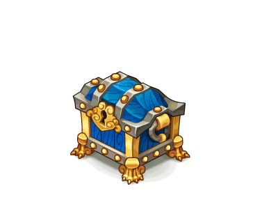

<ion-header [translucent]="true">
  <ion-toolbar color="primary">
    <ion-buttons slot="start">
      <ion-back-button (click)="goToLoginPage()" text="Home" defaultHref="tabs/login"></ion-back-button>
    </ion-buttons>
    <ion-title>
      Thank you!
    </ion-title>
  </ion-toolbar>
</ion-header>

<ion-content class="back">

  
  
</ion-content>
